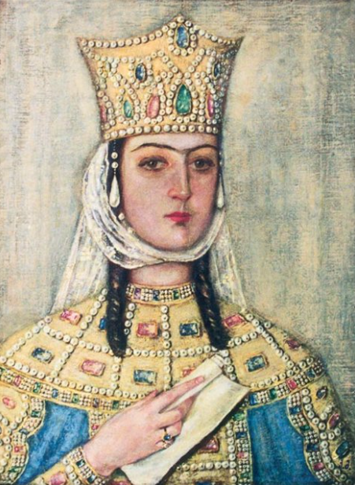
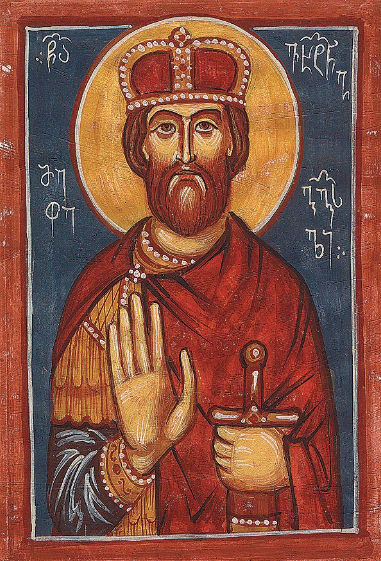

3 of georgias/saqartvelos historical kings
david the builder
Popularly considered to be the greatest and most successful Georgian ruler in history and an original
architect of the Georgian Golden Age, he succeeded in driving the Seljuk Turks out of the country, winning the
Battle of Didgori in 1121. His reforms of the army and administration enabled him to reunite the country and
bring most of the lands of the Caucasus under Georgia's control. A friend of
the Church and a notable promoter of Christian culture, he was canonized by the Georgian Orthodox Church.

tamar the king
Tamar was proclaimed heir and co-ruler by her reigning father George III in 1178,
but she faced significant opposition from the aristocracy upon her ascension to full
ruling powers after George's death. Tamar was successful in neutralizing this opposition
and embarked on an energetic foreign policy aided by the decline of the hostile Seljuk Turks.
Relying on a powerful military elite, Tamar was able to build on the successes of her predecessors
to consolidate an empire which dominated the Caucasus until its
collapse under the Mongol attacks within two decades after Tamar's death.[4]

vakhtang gorgasali the king
Vakhtang I Gorgasali (Georgian: ვახტანგ I გორგასალი,
romanized: vakht'ang I gorgasali;
c. 439 or 443 – 502 or 522), of the Chosroid dynasty, was a king (mepe)
of Iberia, natively known as Kartli (eastern Georgia) in the second half
of the 5th and first quarter of the 6th century.
He led his people, in an ill-fated alliance with the Byzantine Empire,
into a lengthy struggle against Sasanian Iranian hegemony,
which ended in Vakhtang's defeat and weakening of the kingdom of Iberia.
Tradition also ascribes him reorganization
of the Georgian Orthodox Church and foundation of Tbilisi, Georgia's modern capital.[1]
!quiz!